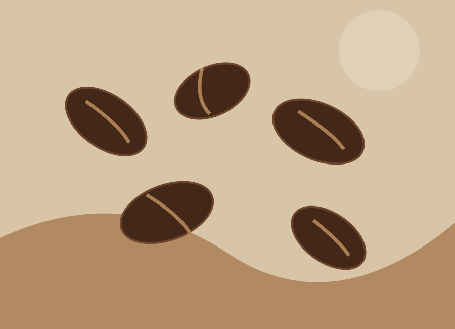
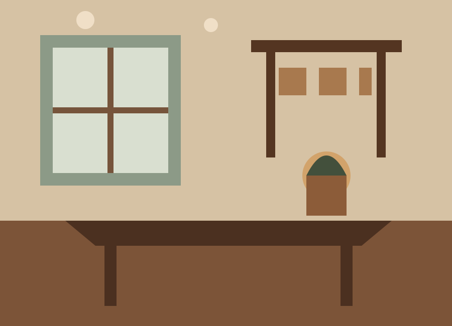

Lebih dari sekadar
secangkir kopi.
Kami percaya kopi adalah jembatan. Menghubungkan petani, alam, dan setiap orang yang menikmati jeda kecil di tengah kesibukan.
Karena itu, Kopi Nusantara memilih biji kopi dari berbagai daerah di Indonesia dan mengolahnya dengan penuh perhatian. Dari aroma pertama hingga tegukan terakhir, selalu ada kekayaan rasa yang layak dirayakan.
Kenali perjalanan kami ↗Kopi yang baik bukan hanya tentang rasa,
tetapi juga tentang momen yang tercipta.
Tempat singgah,
rasa yang tinggal.
Nikmati suasana hangat dengan sentuhan modern. Datang untuk bekerja, berbagi cerita, atau sekadar menikmati waktu untuk diri sendiri.
Kunjungi Kedai →
Mari berbagi
cerita kopi.
Punya pertanyaan, ingin pesan, atau sekadar menyapa? Kami senang mendengar dari Anda.
Jl. Contoh Nusantara No. 10, Tangerang
Setiap hari, 09.00 – 22.00 WIB
+62 812-0000-0000
Ganti alamat, jam operasional, dan nomor WhatsApp dengan informasi kedai Anda.